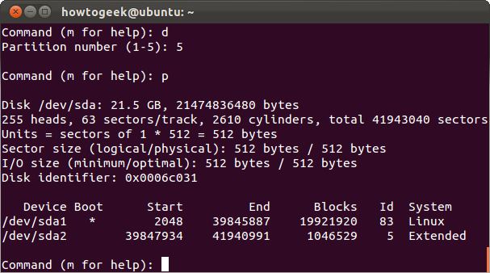

LVM How To
Old or Outdated
This file is old, and I have yet to proof read it since I last wrote it, which was like, a million years ago or something, so one: take it with a grain of salt; and two: I’m sorry if its wrong! Please, feel free to open an issue on the corresponding github page: Issues · jpartain89/Software-Install-Guides · GitHub
This how to, for now - like all the others - is more for my remembering how to do something, and as I learn more about LVM, I’ll try to add those nuggets here.
Old Hard Drive?
Do you have an old drive that you need to erase and reformat? There are several ways to erase a disk on debian-based systems, but we’ll use good old fdisk for this one.
Like above, you wanna run sudo lsblk or sudo fdisk -l to find where your drive is located. Then, use that designation for the next commands:
sudo fdisk /dev/<drive_label>
Next, you’ll want to use d to delete all of the partitions, using the command for as many partitions are on the drive.
{kind=link}
Then, you can use the p command to print the current table.
Cleaned Hard Drive
These steps are for a fresh hard drive, either brand new or freshly erased, and we’ll be using fdisk once again.
sudo fdisk -l
This command lists the hard drives that the OS can find, whether actually mounted or not. And, it outputs a LOT of information. An alternative command you can use, that I usually prefer:
sudo lsblk
This one is really great for if you already have drives mounted somewhere, so you can keep your bearings on which drives are what. Example output below:
NAME MAJ:MIN RM SIZE RO TYPE MOUNTPOINT
sda 8:0 0 1.8T 0 disk
└─sda1 8:1 0 1.8T 0 part /media/server1
sdb 8:16 0 1.8T 0 disk
└─sdb1 8:17 0 1.8T 0 part /media/server2
sdc 8:32 0 465.8G 0 disk
├─sdc1 8:33 0 456G 0 part /
└─sdc2 8:34 0 9.8G 0 part [SWAP]
sdd 8:48 0 1.8T 0 disk
└─sdd1 8:49 0 1.8T 0 part
└─mdusa-externals 252:0 0 2.7T 0 lvm /media/mdusa
sde 8:64 0 931.5G 0 disk
└─sde1 8:65 0 931.5G 0 part
└─mdusa-externals 252:0 0 2.7T 0 lvm /media/mdusa
sr0 11:0 1 1024M 0 rom
Next, you’ll use the ID of the drive in the command:
sudo fdisk /dev/<disk_id>
This starts fdisk with your disk selected. If you want to see all of the commands, m is the help option.
We are wanting to add a new partition, so type n and press enter, and then select p for primary. Next, it’ll ask for the sector locations of where you want the partitions to exist. You’ll notice that the program gives you a default selection to choose from. For the sector locations, you can choose the default options that fdisk provides, pressing enter to keep going.
Next, you’ll use the t option, which changes the partition type/id. In here, there is a super long list of options, and how you select the id can change from version to version, so you’ll need to list the options.
Command (m for help): t
Selected partition 1
Partition type (type L to list all types): l
0 Empty 24 NEC DOS 81 Minix / old Lin bf Solaris
1 FAT12 27 Hidden NTFS Win 82 Linux swap / So c1 DRDOS/sec (FAT-
2 XENIX root 39 Plan 9 83 Linux c4 DRDOS/sec (FAT-
3 XENIX usr 3c PartitionMagic 84 OS/2 hidden or c6 DRDOS/sec (FAT-
4 FAT16 <32M 40 Venix 80286 85 Linux extended c7 Syrinx
5 Extended 41 PPC PReP Boot 86 NTFS volume set da Non-FS data
6 FAT16 42 SFS 87 NTFS volume set db CP/M / CTOS / .
7 HPFS/NTFS/exFAT 4d QNX4.x 88 Linux plaintext de Dell Utility
8 AIX 4e QNX4.x 2nd part 8e Linux LVM df BootIt
9 AIX bootable 4f QNX4.x 3rd part 93 Amoeba e1 DOS access
a OS/2 Boot Manag 50 OnTrack DM 94 Amoeba BBT e3 DOS R/O
b W95 FAT32 51 OnTrack DM6 Aux 9f BSD/OS e4 SpeedStor
c W95 FAT32 (LBA) 52 CP/M a0 IBM Thinkpad hi ea Rufus alignment
e W95 FAT16 (LBA) 53 OnTrack DM6 Aux a5 FreeBSD eb BeOS fs
f W95 Ext'd (LBA) 54 OnTrackDM6 a6 OpenBSD ee GPT
10 OPUS 55 EZ-Drive a7 NeXTSTEP ef EFI (FAT-12/16/
11 Hidden FAT12 56 Golden Bow a8 Darwin UFS f0 Linux/PA-RISC b
12 Compaq diagnost 5c Priam Edisk a9 NetBSD f1 SpeedStor
14 Hidden FAT16 <3 61 SpeedStor ab Darwin boot f4 SpeedStor
16 Hidden FAT16 63 GNU HURD or Sys af HFS / HFS+ f2 DOS secondary
17 Hidden HPFS/NTF 64 Novell Netware b7 BSDI fs fb VMware VMFS
18 AST SmartSleep 65 Novell Netware b8 BSDI swap fc VMware VMKCORE
1b Hidden W95 FAT3 70 DiskSecure Mult bb Boot Wizard hid fd Linux raid auto
1c Hidden W95 FAT3 75 PC/IX bc Acronis FAT32 L fe LANstep
1e Hidden W95 FAT1 80 Old Minix be Solaris boot ff BBT
Partition type (type L to list all types):
The id you’re wanting to pick from here is Linux LVM, which with the above options is 8e.
And, finally, use w to write all of these changes to the drive, and then fdisk exits you out.
LVM Commands
Now, we start using the actual commands for LVM.
LVM Physical Volume
First, before we make the Volume Group, we need to finish working on the freshly wiped hard drive. You’ll need to run pvcreate to finish that off.
sudo pvcreate /dev/<disk_id>
It’ll most likely throw a warning saying that an existing ext4 signature was detected. Are you sure you want to continue? Enter y to confirm, and it formally formats it correctly for you to be able to use it in an LVM Volume Group.
Volume Group
We need to create the Volume Group first:
sudo vgcreate <pool_name> /dev/<disk_label>
Replace the <pool_name> with the name you want to use. I like to use the computer’s host name as the volume name, as I usually only have one volume on my systems.
Logical Volume
Next, we create the logical volume that LVM will use. This is the individual volumes within the group, like partitions on a hard drive.
sudo lvcreate -l 100%FREE -n <volume_name> <pool_name>
Lets break this down a bit:
-l : This option is for selecting the size of the volume. There are several different options not only within the -l flag, but there is also a -L flag for using a specific size, like
3Gfor 3 GBs. To get a handle on this info, its best to start looking at lvcreate s man page. The 100%FREE option here is telling the program to use all available free space.-n : this is for saving the volume’s name.
Then, you finish it off with the
<pool_name>from earlier.
Filesystem
And, finally, we have to format an actual file system inside the volume.
sudo mkfs -t <filesystem> /dev/<pool_name>/<volume_name>
Here, the location of the Volume Group and Logical Volume are within the /dev directory. But, the first time you run this command, the normal bash-completion might not yet have this location ready for you, so you’ll need to type out the entire location.
Mount Point
Now, create the mount point and mount the volume!
sudo mkdir <your_mount_point>
sudo mount /dev/<pool_name>/<volume_name> <your_mount_point>
So, from now on, you are able to reference just the volume_name for however many hard drives you place within your volume.